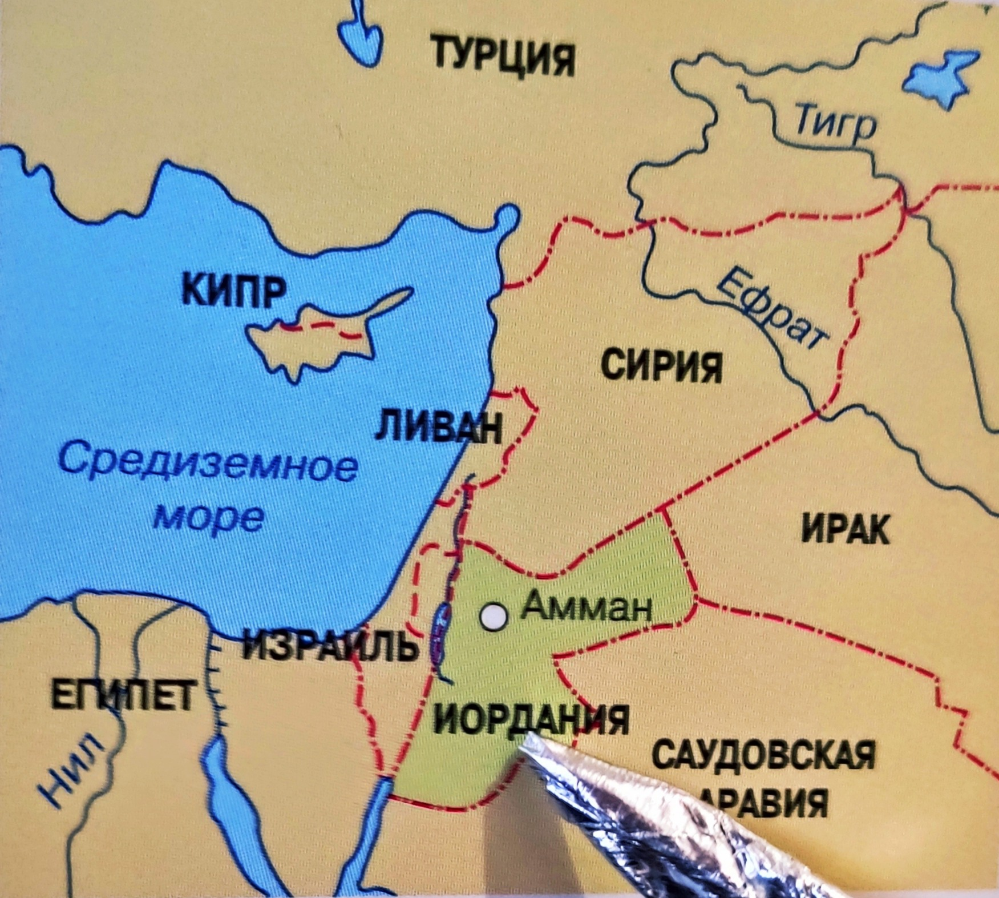
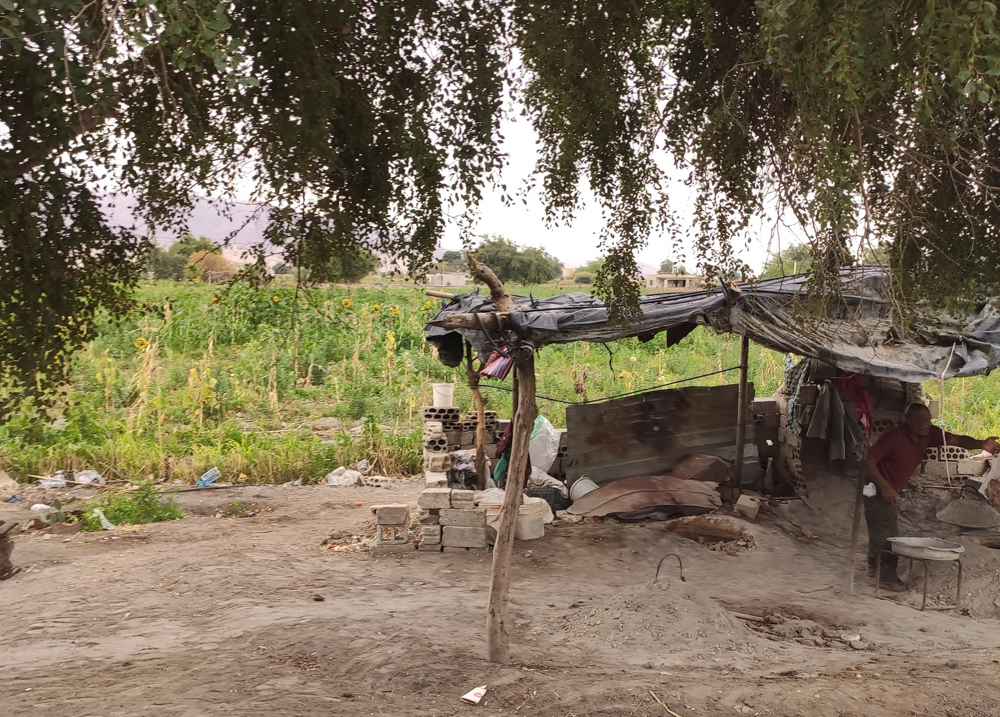
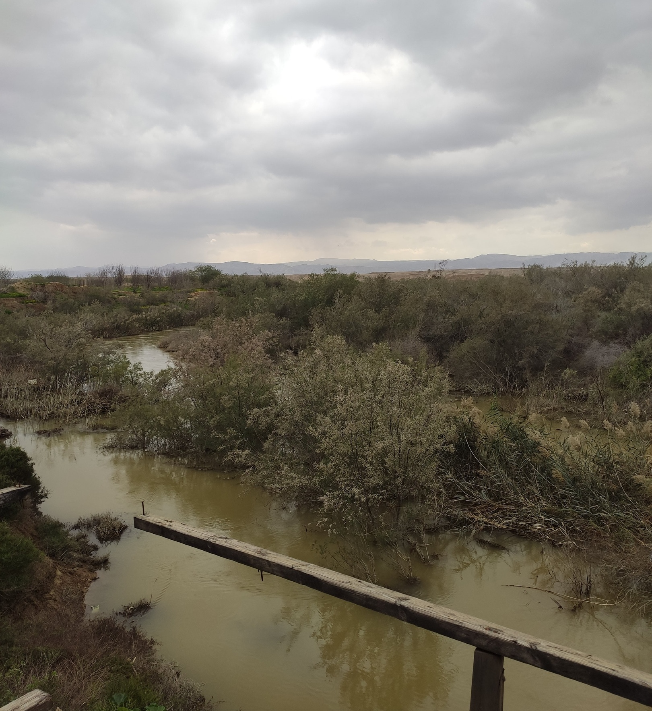
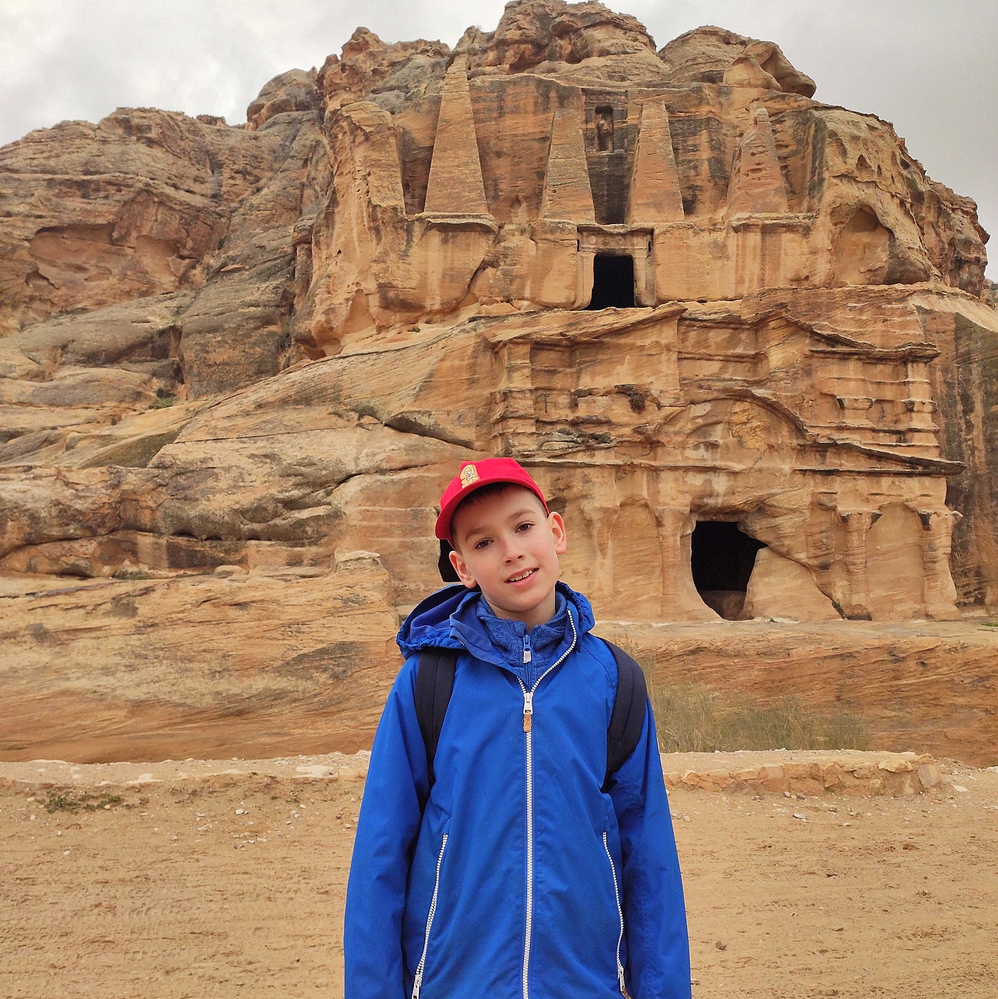
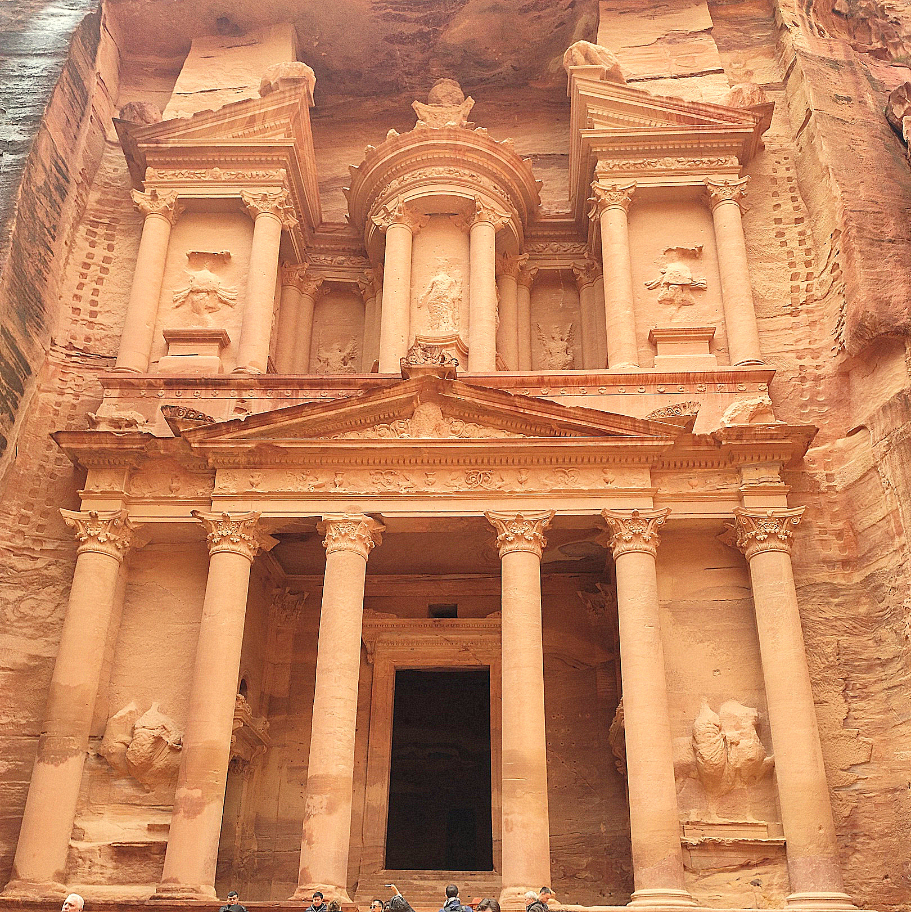
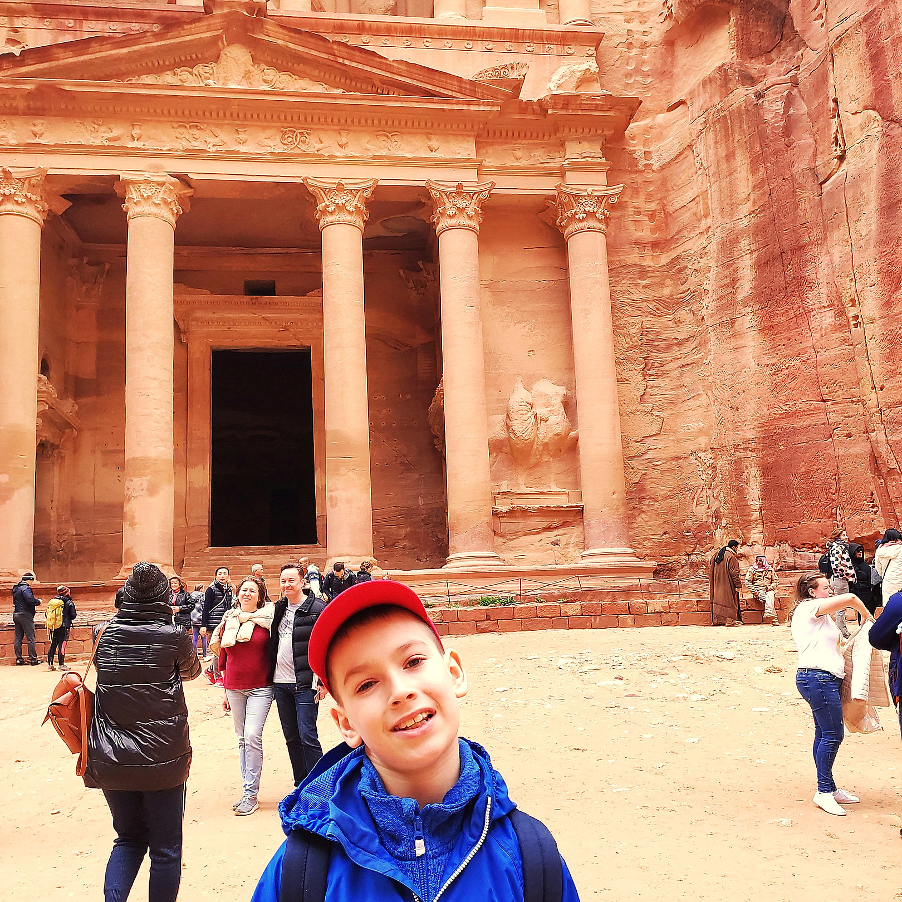
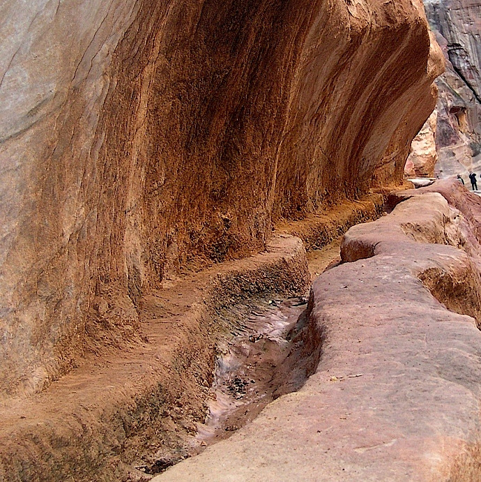

Страна Иордания - это монархия. Король Иордании Абдалла и его предшественник король Хуссейн,
многое сделали для развития Иордании. построили развитую систему дорог, открыли школы в каждом
маленьком поселке и многое др. Иордания стала одной из самых стабильных и безопасных монархий
Ближнего Востока.

Река Иордан

В этом месте мы притормозили, чтобы купить теплых бедуинских лепешек.
Лепешки продавец доставал из печи, которая закопана вот здесь под навесом

Река Иордан во время своей истории меняла свое русло, на этом фото можно представить это.
Это моя бабушка
Граница Иордании и Израиля
Второе чудо света: Пе́тра

В песчаниковых скалах множество пещер. Но главное, что бросается в глаза, — это выдолбленные в скалах склепы.

Узкий каньон Сик длинной в 1 км. За ним нам открылся Эль-Хазне — величественное здание с фасадом, высеченным из огромной скалы.
Набатеи были язычники. В скалах они вырубали склепы для своих умерших и делали ступы для джинов.

Мавзолей Эль-Хазне — пример величайшего мастерства древних архитекторов и камнерезов. Каменотёсы начинали с самого верха,
вырубая первую ступень, а затем спускались все ниже и ниже. Так вот - одно дело размечать будущую постройку и вырубать её, стоя на
строительных лесах, и совсем другое — это, повиснув над пропастью.

С помощью терракотовых труб архитекторы Петры создали сложную систему водоснабжения и, несмотря на засушливый климат,
жители города никогда не нуждались в воде. По всему городу было расположено около 200 резервуаров, собиравших и хранивших дождевую воду.
Помимо связи резервуаров, терракотовые трубы собирали воду изо всех источников в радиусе 25 километров.
Пустыня Вади-Рам
Каменистая пустыня Вади Рам, она же Лунная долина, находится на юге Иордании. Это очень живописное место.
Красно-оранжевые марсианские пейзажи привлекли многих режиссёров к съемкам фильмов
«Трансформер», «Красная планета», «Марсианин».
И мне приходилось задерживаться, чтобы сделать несколько фото невероятно красивой горы.
В этой пустыне проходили и исторические события. В 1916-1918 гг. здесь восставшие
арабы воевали против турок
Дайвинг в Красном море
Во время проведенное в Иордании, мы решили совершить погружение в заливе Акаба.
Наше 1-ое погружения проводилось с берега, так как наш дайвинг клуб расположен на
мелководье. Погрузились на 10 и 15 метров и рассматривали красоты коралловых
рифов Красного моря. Погружение с берега по наклону позволило в спокойном режиме
погрузится до нужной глубины даже моей бабушке. Другой раз погружались с катера к
затонувшим на 15-ти и 6-ти метровой глубине к самолету и танку. Видимость была
прекрасная до 50-ти метров, температура воды была около 20 градусов.